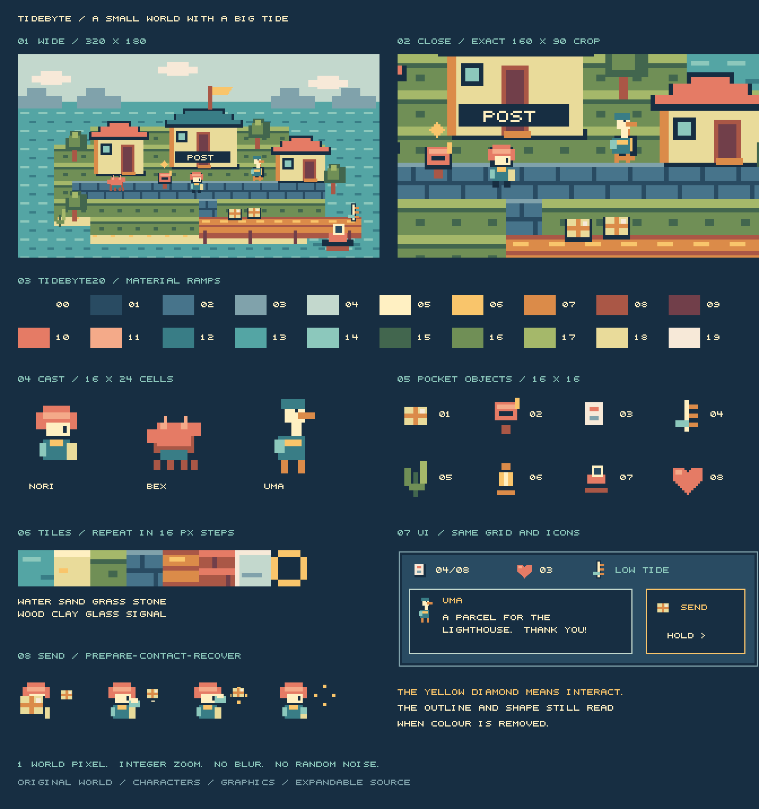
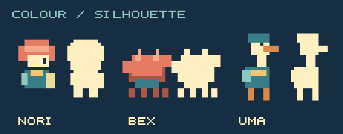
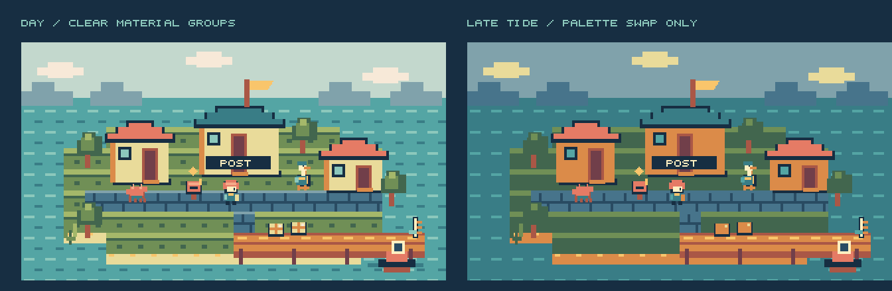

TIDEBYTE
A small world with a big tide. Coral rooftops, an amphibious post boat and three unlikely neighbours. Clear-grain pixels, connected shapes, one shared grid.
Explore the visual language
Loading the island…
Art and animation study, not a finished game. The preview uses integer pixel scaling. Close view magnifies the same source pixels. Send demonstrates anticipation, contact and recovery.
One coherent production sheet

Read the silhouettes


Keep the drawing rules at dusk


Shared rules
320 × 180 world · 16 × 16 tiles and props · 16 × 24 characters · 20 colours. Two or three shades per material. Broad foreground clusters, quiet distant silhouettes. Yellow diamonds mark interaction. No smoothing, compression artifacts, random noise or 3D substitutes.